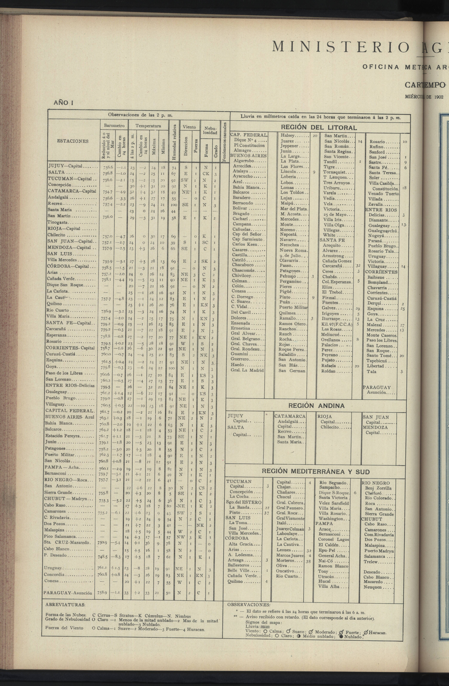
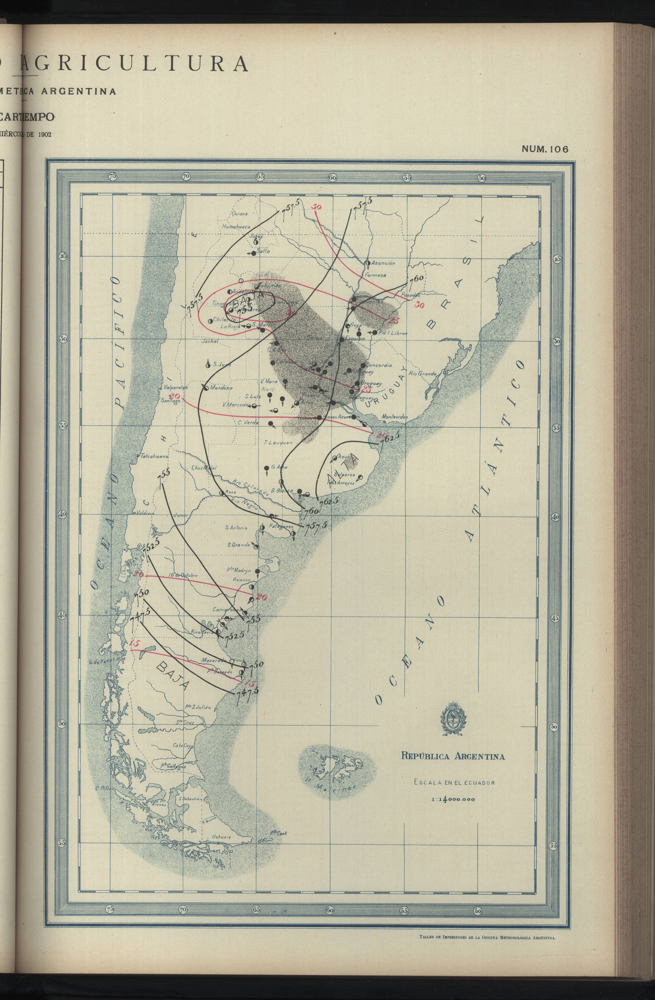

Foreign data in UK Archives¶
We are not interested only in UK observations: reconstruction of the weather in the UK benefits from observations in neighbouring countries, and understanding the weather in the UK requires both reconstruction of the weather over a much larger area and a global program of scientific collaboration.
We cannot take on the job of digitisation for all countries, but we can provide help, particularly if the most accessible archive of a countries observations is in the NMLA.
In situations where we are collaborating with another country, most obviously through ACRE, the Copernicus Climate Change Data Rescue Service, or one of the Newton Fund CSSP or WCSSP projects we could provide images or digitisation as part of our contribution.
|  |  |